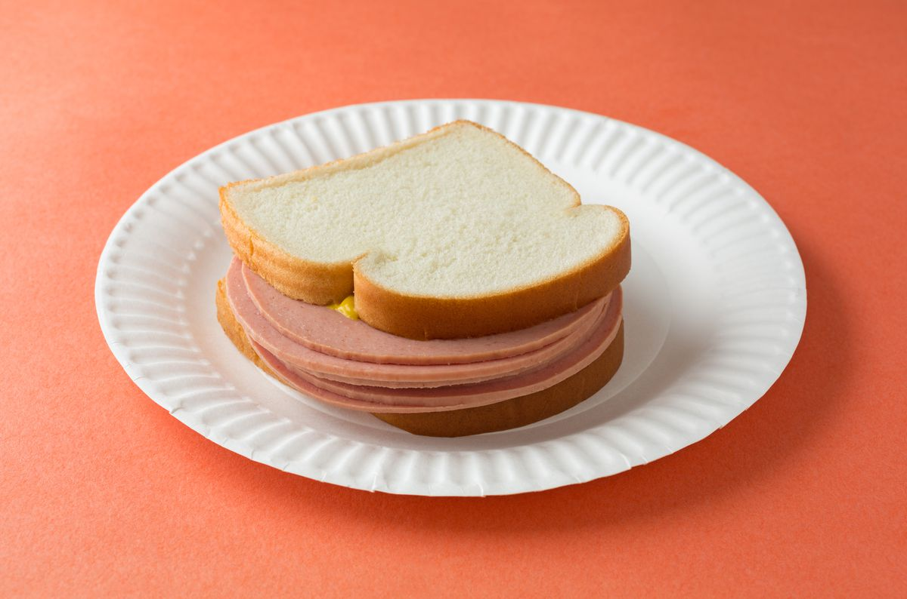

Balogna Sandwich Recipe

Description
Poor man's steak. This is what my parents called balogna when I was growing up. It's cheap, it's tasty, and it's easy to prepare.
Ingredients
- Balogna
- 2 slices of bread
- cheese
Steps
- Put slice bread on plate
- put balogna on bread
- put cheese on top of balogna
- put second slice of bread on top of cheese
- Enjoy your sandwich!